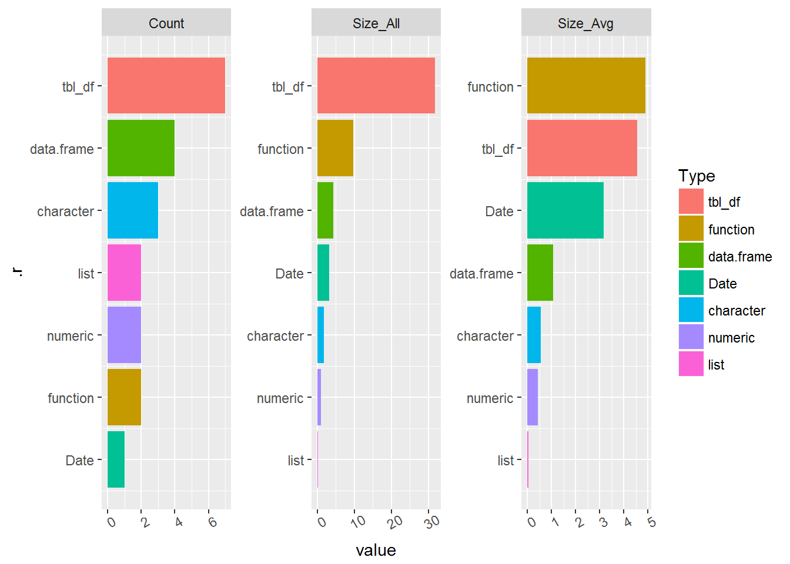

Welcome to my utility package. This is a collection of “random” functions I have created
I use these functions at the command-line or store them in a single file (utilities.R) within other packages.
My current favorite:
library(seasmith)
# - Show the user workspace as a plot and data frame with seasmith::ls.summary().
ls.summary()## # A tibble: 7 × 6
## Type Count Size_All Size_Avg Rows Columns
## <fctr> <int> <dbl> <dbl> <dbl> <dbl>
## 1 tbl_df 7 31.872 4.5531429 248 32
## 2 function 2 9.768 4.8840000 NA NA
## 3 data.frame 4 4.296 1.0740000 26 1
## 4 Date 1 3.168 3.1680000 365 NA
## 5 character 3 1.696 0.5653333 28 NA
## 6 numeric 2 0.888 0.4440000 101 NA
## 7 list 2 0.080 0.0400000 0 NA
library(tidyverse)
# Fill-in these implicit missing month-year values...
dread## # A tibble: 11 × 2
## mon_year n
## <fctr> <int>
## 1 11/2015 5
## 2 12/2015 7
## 3 1/2016 1
## 4 2/2016 2
## 5 4/2016 1
## 6 8/2016 2
## 7 9/2016 3
## 8 10/2016 7
## 9 11/2016 6
## 10 12/2016 6
## 11 1/2017 16# ...by using seasmith::seq_fill_date_df()
dread %>%
seasmith::seq_fill_date_df("mon_year")## # A tibble: 15 × 2
## mon_year n
## <fctr> <int>
## 1 11/2015 5
## 2 12/2015 7
## 3 1/2016 1
## 4 2/2016 2
## 5 3/2016 NA
## 6 4/2016 1
## 7 5/2016 NA
## 8 6/2016 NA
## 9 7/2016 NA
## 10 8/2016 2
## 11 9/2016 3
## 12 10/2016 7
## 13 11/2016 6
## 14 12/2016 6
## 15 1/2017 16